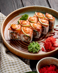

Tradiciones
Ceremonía del Té, Kabuki... Las tradiciones japonesas abarcan desde costumbres sociales y culturales hasta prácticas religiosas y artísticas. Entre las más notables se encuentran el respeto y la modestia, expresados mediante...
Estética Japonesa
Es una filosofía de vida que valora la belleza efímera, la asimetría, la imperfección y la armonía con la naturaleza, a diferencia de la estética occidental que suele buscar el orden y la perfección. Conceptos clave como wabi-sabi...

Innovación Tecnólogica
Abarca áreas como la robótica, la electrónica de consumo, la inteligencia artificial y la tecnología de la luz. Ejemplos notables incluyen los robots HAL que ayudan a personas con discapacidades, el descubrimiento de la luz LED azul, y la creación de los emojis. Japón también destaca...
Gastronomía
Tambíen conocida como washoku, se caracteriza por su énfasis en ingredientes frescos y de temporada, la importancia de la presentación y el uso del arroz como base, acompañado de sopa de miso, pescado y verduras. Platos icónicos incluyen el sushi y el sashimi, pero también ...
Valores Sociales
Los valores fundamentales de la sociedad japonesa, que forman la base de su cultura, incluyen el respeto, la armonía (wa), la solidaridad, la honestidad, la gratitud, la paciencia y el colectivismo, donde el grupo prevalece sobre el individuo. Estos principios se manifiestan en el comportamiento social, el respeto por las jerarquías...
Sección Interactiva
Aquí podrás explorar Japón de una forma dinámica y divertida. Recorre sus regiones a través de un mapa interactivo, descubre curiosidades y datos interesantes con nuestro quiz de cultura japonesa, y únete al foro para compartir tus experiencias, preguntas y opiniones con otros entusiastas. ¡Aprender sobre Japón nunca fue tan entretenido!